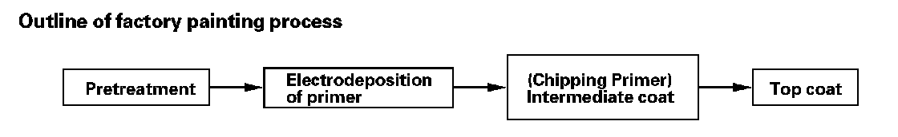
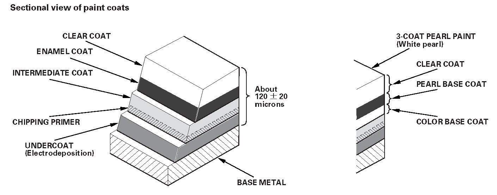

Paint: Description and Operation
Paint InformationGeneral
The 3-coat-3-bake (3C-3B) paint finish gives the Acura MDX a deep gloss and stunning finish. This data provides information on paint defect, repair, and refinishing. Throughout, the objective is to explain in a simple yet comprehensive manner the basic items you should know about paint repairs. Select the correct material for the defect and repaint or refinish in the correct manner as described in this data.
Basic Rules for Repairing a Paint Finish
To repair paint damage, always use the 2-part acrylic urethane paints designated; polish and bake each of the three coats, as in production, to maintain the original film thickness, and to assure the same quality as the original finish.
Outline of factory painting process

Features In Each Work Process
Pretreatment and electrodeposition
In the pretreatment process, the entire body is degreased, cleaned, and coated with zinc phosphate by dipping.
After the body has been cleaned with pure water, it is placed in an electrolytic bath of soluble primer (Cationic Electrodeposition).
This produces a thorough corrosion inhibiting coating on the inner surface and corners of the body, pillars, sills, and panel joints.
Chipping primer is then applied to the most susceptible areas.
Intermediate coat
The intermediate coat is applied to the prepared surface to further protect against damage.
Top coat
Enamel paint and either polyester or acrylic resin paint are used in the top coat for higher solidity, smoothness, brightness, and weather resistance.
Sectional view of paint coats
